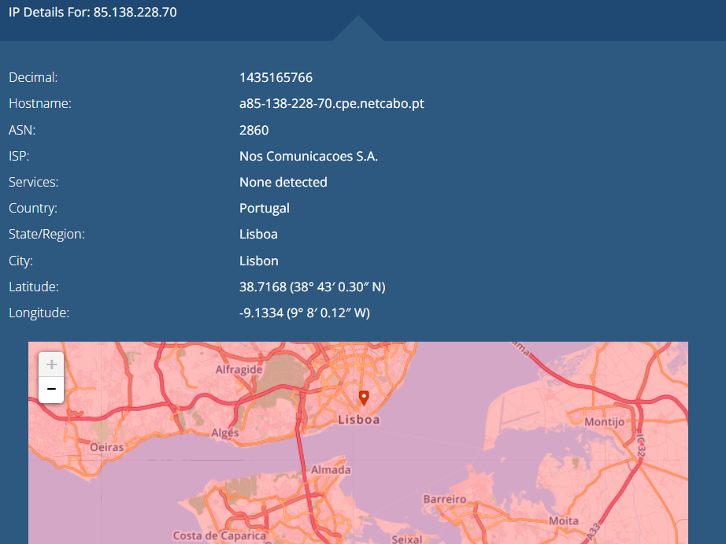
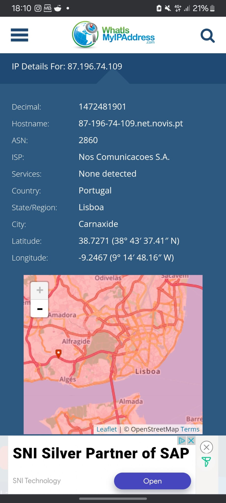
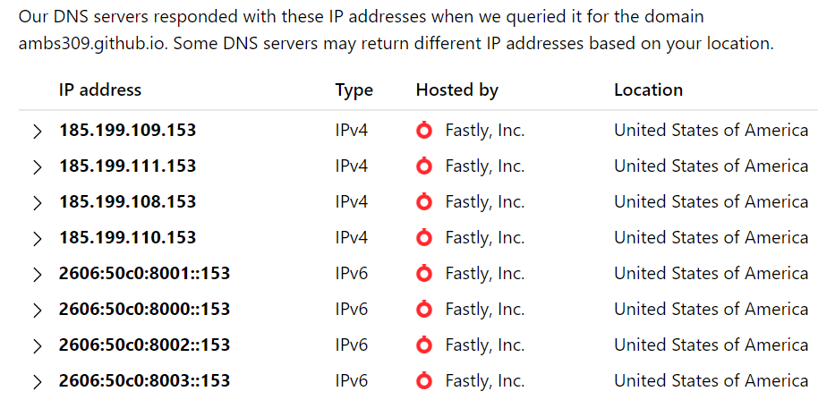
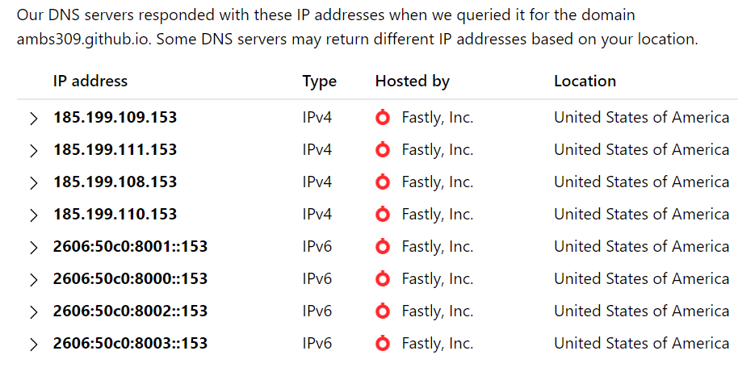
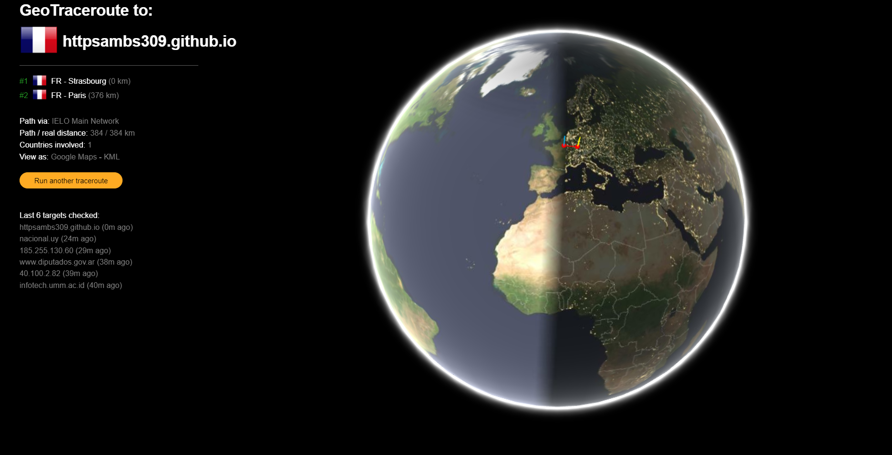
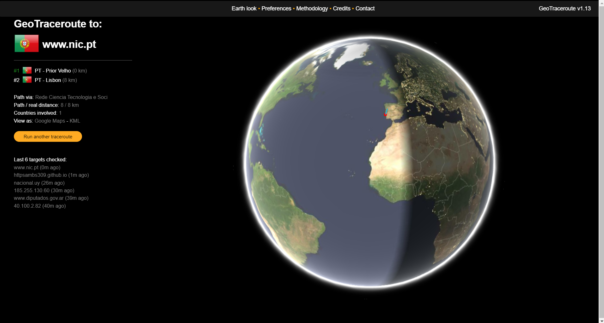

localização dos servidores da internet que usei a realizar este trabalho
 Aqui abaixo tenho algumas informções sobre os DNS relativos ao meu Site
 

Nas imagens seguintes tenho informações sobre as Traceroutes da minha Landing Page
 Explorei também algo acerca do Github